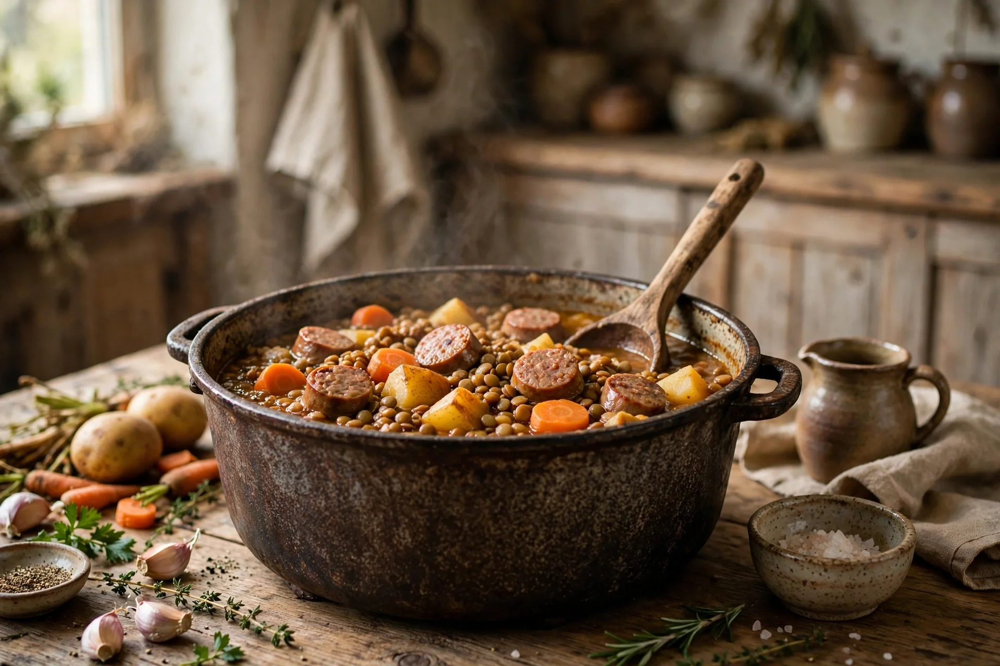

Linseneintopf (Hearty Lentil Stew)
A pot of lentil stew warms you from the inside and feeds everyone well – honest food for the whole family. With plenty of vegetables, a splash of vinegar at the end and sausages if you wish, it tastes just like Grandma's.

Contents
Ingredients
Instructions
- Rinse the lentils in a sieve under cold water. Peel and dice the onion, carrots, potatoes and celery root; slice the leek into rings and wash it.
- Heat the oil in a large pot and sweat the onion until translucent. Add the carrots, celery root and leek and cook for 2–3 minutes.
- Add the lentils, potatoes, broth and bay leaf, bring to a boil, then cover and simmer over medium heat for 35–40 minutes, until the lentils and vegetables are tender.
- Remove the bay leaf. Season the stew generously with vinegar, salt, pepper and marjoram.
- If you would like sausages, add the slices now and let them warm through in the hot stew for about 5 minutes – do not boil them.
- Serve sprinkled with parsley, with fresh bread on the side.
Tip
Add the vinegar only at the very end – acid from the start would keep the lentils firm. The stew thickens overnight and tastes even better reheated on day two with a splash of water.
📌 Find more recipe ideas on our Pinterest profile:
Lecker Rezepte on Pinterest
Lecker Rezepte on Pinterest